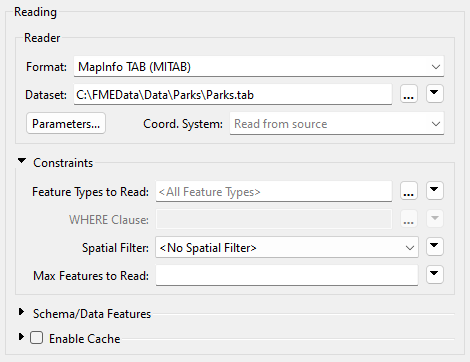
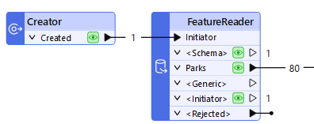
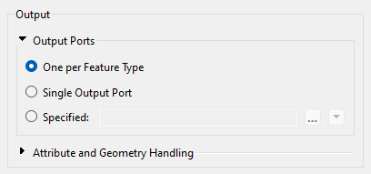
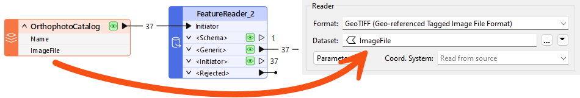
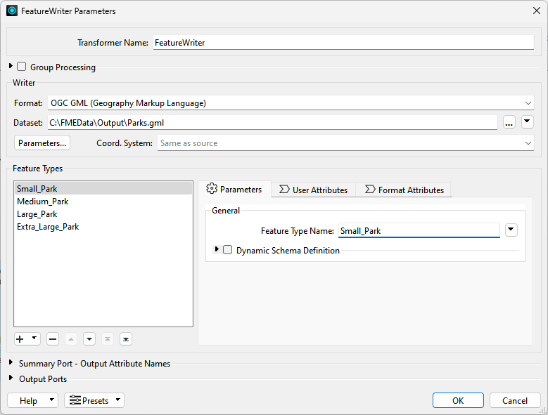
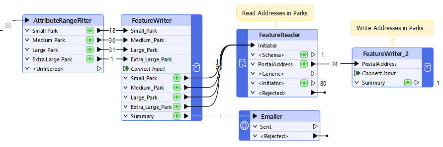

After completing this lesson, you’ll be able to:
In addition to being able to read data with a reader and writer, FME has transformers specifically designed to read and write data. These are the FeatureReader and FeatureWriter transformers.
The advantage of these transformers is that they have input ports (FeatureReader) and output ports (FeatureWriter). So, where a reader is always the first action in a workspace and a writer is always the last, a FeatureReader and FeatureWriter can read and write data at any point in a translation.
The FeatureReader is set up with parameters to read a specific dataset:

Any feature that enters the Initiator input port will cause the data to be read, like here, where a Creator supplies a null feature to trigger reading:

The Creator creates a single feature that triggers the FeatureReader to read a dataset of park features. If the Creator created ten features for some reason, then the data would be read ten times, resulting in 800 output features!
The FeatureReader has output ports that correspond to feature types. You can control these ports by expanding the Output > Output Ports section of the parameters.

You have three options:
The FeatureReader contains several output ports.
A typical case with the FeatureReader is to supply the dataset to read as an attribute:

This example includes both reader and FeatureReader. The workspace reads a Shapefile dataset containing an index of orthophotography datasets. Each feature in the Shapefile is a polygon representing the orthophoto boundary with an attribute that points to a GeoTIFF file containing that orthophoto.
The FeatureReader is set up to use the attribute as the filename to read. The result is that 37 features are read from the Shapefile, and the equivalent 37 GeoTIFF images exit the FeatureReader.
The source features do not need to be spatial. For example, an Excel spreadsheet with a list of files to read is just as valid.
A key parameter in the FeatureReader sets a spatial filter on the data being read:

The Initiator Contains Result filter (for example) means that the FeatureReader reads features if their geometry falls inside the geometry of the initiator feature. For example, here:

A dataset of parks supplies input features that trigger reading from a database address table. The FeatureReader applies a spatial filter to only read addresses inside a park.
⭐ New for FME 2024.2: you can now specify to Clip to Initiator in the FeatureReader. This parameter brings behavior from readers to the FeatureReader and can improve performance when reading with Initiator geometry. Check out this video to learn more.
⭐ New for FME 2025.1: the FeatureReader can now execute queries against databases that support SQL/Cypher. Set Define Read Criteria By to Custom Query and enter a query using SQL or Cypher depending on the format. All features will come out of the <Generic> port. Check out the documentation to learn more.
Also new for 2025.1 is the DatabaseQuerier transformer, which combines the functionality of the existing SQLExecutor and SQLCreator transformers. This transformer lets you execute SQL or other query language statements against a database, and it includes an optional Inititator port.
The FeatureWriter is set up with parameters to write a specific dataset:

The dialog allows the definition of the format and dataset to write, plus the feature types to be written and their attributes. In short, the parameters, settings, and schema definition required for a writer appear in this single dialog.
You can add more feature types using the plus button. Note that this will not, by default, create more output ports. Instead, like the FeatureReader, you can control the output ports under the Output Ports section at the bottom of the dialog.
Feature types can be manually defined within the dialog itself or can be added automatically by connecting to the Connect Input input port:

Notice also that an important part of the FeatureWriter is that its exit ports can be connected to other transformers for further processing. In the above screenshot, parks data is written, and a single summary feature triggers an Emailer transformer. The Emailer sends a copy of the data to a user.
The data is then input to a FeatureReader, which reads all addresses inside a park and writes the results using a FeatureWriter.
Features from a FeatureWriter contain the attribute _dataset, which stores the file path to the written data. Subsequent transformers can use this path (or paths) to do things with the written files.
One common workflow with the FeatureWriter is to write out a dataset temporarily before uploading it to a web service using a Connector transformer or HTTPCaller.
This process works well, but you should consider using a TempPathnameCreator transformer in conjunction with the FeatureWriter. The TempPathnameCreator lets you create a temporary folder that is deleted after the workspace finishes running. You can write your data there temporarily, upload it, then delete the local version afterwards. This technique lets you avoid temporary data piling up, which is especially important if the workspace runs frequently.
The setup looks like this:

If you are running the workspace on FME Flow, you can use the FME_SHAREDRESOURCE_TEMP FME Flow parameter to write the data to FME Flow's temporary data store, which is periodically deleted according to the FME Flow configuration. TempPathnameCreator also works on FME Flow.
You'll need this image to answer one of the quiz questions below.

Map tiles by Stamen Design, under CC BY 3.0. Data by OpenStreetMap, under CC BY SA.